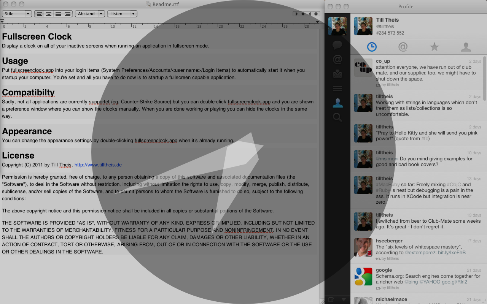

{% include project-summary.html project=site.data.projects.fullscreenClock actions=page.actions %}

<div class="alert alert-info" role="alert">When running the app for the first time, you need to right click <mark>fullscreenclock.app</mark> and choose <mark>Open</mark>.</div> 
<p></p>
